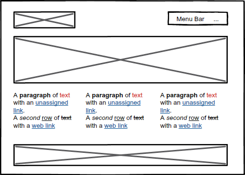
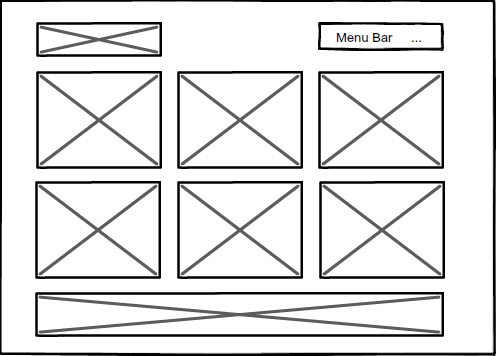
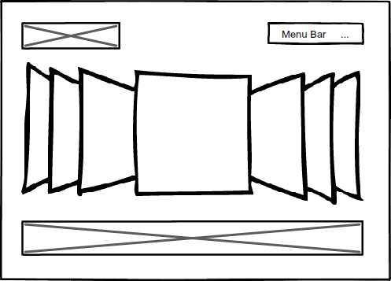
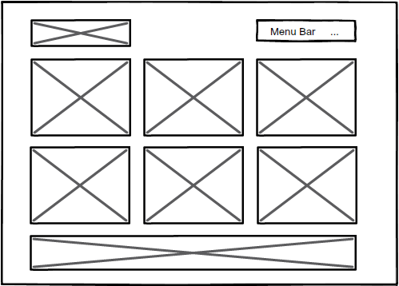
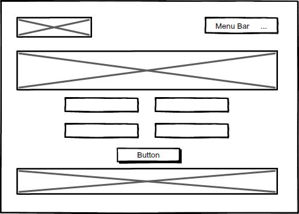
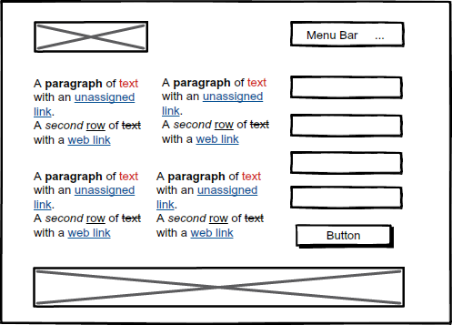

The two websites I am most inspired by are Bang and Frank Digital. They are both large digital agencies based in Sydney, Australia.
Bang
The Bang website uses negative space in the format of background white space and then the content is sitting within the positive space of the page. The primary focal point of the page is the carousel above the fold of the page which displays recent work from the agency which is the largest object on the page. The logo on the page works more like a secondary focal point to the user, being that the logo is quiet small compared to the other objects. The balance of the website is quite simple, with the logo in the top left hand corner and then the navigation to the right of the logo, and immediately following these two items is the full page width carousel. Below the fold the agency displays its most recent work using a three column grid layout.
Frank Digital
Frank Digital's website also uses white negative space with positive imagery and colours used across the page. The primary focal point is the large carousel and typography. The carousel displays their most recent work and the typography showcases their work and what sets them apart from their competitors. Below the carousel they display their menu with simple white text on a black background. Frank Digital's website can benefit from possibly taking the logo outside of laying on top of the carousel. Sometimes it could get lost into the background depending on the image being used in the carousel. I do like how when you travel down the page the menu and logo become smaller and stay static at the top of the webpage.
Similarities:
Differences:
Homepage - Version 1

The focal point of this page is the large hero banner below the logo and navigation menu. The paragraphs below the hero banner create the hierarchy. The page is balanced with the use of white negative space.
Homepage - Version 2

The focal point of this page is the large 6 square objects on the page. This page is using a 3 column grid layout. They create a hierarchy by encouraging users to click through for more information. The page is balanced with the use of white negative space.
Our Work - Version 1

The focal point of this page is the rotating carousel in the center which promotes the agencies most recent work. The balance of this page is quite simple. The page is balanced with the use of white negative space.
Our Work - Version 2

This page is very similar to 'Homepage - Version 2' where the focal points are the large 6 square objects within a 3 column grid layout. When a user hovers over the object, it rotates and encourages the user to read more information on the next page. The page is balanced with the use of white negative space.
Contact Us - Version 1

The focal point of this page is the hero banner below the logo and navigation menu. The contact form below the hero banner creates a hierarchy and encourages users to complete and submit the form. The page is balanced with the use of white negative space.
Contact Us - Version 2

The focal point of this page is the paragraphs of text on the left hand side of the page which displays various office locations and contact us numbers. Hierarchy is achieved by placing content from left to right and using a contact form on the right hand side of the page. The page is balanced with the use of white negative space.